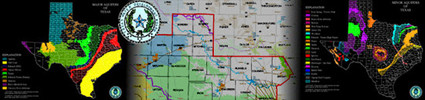

|
USGS Ogallala Aquifer Factsheet [from http://www-ne.cr.usgs.gov/]
FS-124-99: Water-Level Changes 1980-97/ Saturated Thickness 1996-97 [HTML] or [PDF]
Figure 1 - [584k] - Water-level changes in the High Plains aquifer, 1980 to 1997
Figure 2 - [588k] - Generalized water-level changes in the High Plains aquifer, 1996 to 1997
Figure 3 - [408k] - Annual precipitation, 1996 and departure from the 30-year normal precipitation, 1961 to 90
Figure 4 - [672k] - Saturated thickness of the High Plains aquifer, 1996-97
USGS Ogallala Aquifer Factsheet [from http://www-ne.cr.usgs.gov/]
Water-Level Changes in the High Plains Aquifer, 1980-96
Figure 1 - [684k] - Water-level changes in the High Plains aquifer, 1980 to 1996
Figure 3 - [576k] - Water-level changes in the High Plains aquifer, 1995 to 1996
Figure 4 - [264k] - Fresh ground-water withdrawal rates by county during 1995 (data retrieved April 1998)
Figure 5 - [484k] - Annual precipitation, 1995, and departure from 30-year normal precipitation (1961-90)
USGS Ground Water Atlas Of The US [from http://capp.water.usgs.gov]
HA 730-E High Plains (Ogallala) Aquifer
Figure 38 - [552k] - Map showing extent of the High Plains aquifer
Figure 39 - [112k] - Geologic units that underlie the High Plains aquifer
Figure 40 - [76k] - Correlation chart
Figure 41 - [88k] - Map showing base-of-aquifer contour
Figure 42 - [88k] - Map showing water-table contour
Figure 43 - [144k] - Map showing hydraulic conductivity
Figure 44 - [184k] - Map showing specific yield
Figure 45 - [120k] - Map showing dissolved-solids concentration
Figure 46 - [164k] - Land area irrigated with water from the High Plains aquifer
Figure 47 - [88k] - Map showing water-table contour
Figure 48 - [116k] - Map showing net water-level change predevelopment to 1980
Figure 49 - [156k] - Map showing Saturated thickness
Figure 50 - [148k] - Map showing Depth to water in 1980
Figure 51 - [12k] - Use of fresh ground-water withdrawals during 1985
Figure 52 - [144k] - Map showing potential yield of wells in 1980
USGS Ground Water Atlas Of The US [from http://capp.water.usgs.gov]
HA 730-E Pecos River Basin Alluvial Aquifer
Figure 25 - [200k] - Map showing extent of the Pecos River Basin alluvial aquifer
Figure 26 - [8k] - Correlation chart
Figure 27 - [24k] - Cross section showing thickness of the Pecos River Basin alluvial aquifer
Figure 28 - [76k] - Map showing base-of-aquifer contour
Figure 29 - [72k] - Map showing potentiometric contour
Figure 30 - [84k] - Map showing saturated thickness of the aquifer
Figure 31 - [12k] - Fresh ground-water withdrawals during 1985
USGS: Lower-Quality Ogallala/High Plains Aquifer Maps [from http://water.usgs.gov/]
Bedrock
Contours: Specific Yield
Contours: Base of Aquifer
Contours: 1980 Water Levels
Contours: Hydraulic Conductivity
Contours: 1980 Saturated Thickness
Contours: Predevelopment Water Levels
Changes in Water Levels from Predevelopment to 1980
Boundaries, Faults, and Areas of Little or No Saturated Thickness
|  |
Maps from the Texas Water Development Board [from http://www.twdb.state.tx.us/mapping/]
Major Aquifers of Texas - [876k]
Minor Aquifers of Texas - [620k]
Regional Water Planning Group Region F - [2.1MB] - Includes Andrews County
Water-Level Changes in the High Plains Aquifer of Texas, 1980-90 - [380k]
The Dockum Aquifer In West Texas - [500k PDF] - from the report "Aquifers in West Texas"
TWDB: WCS in Andrews: Wells Around the Site Area [from the TWDB Water Well Data Viewer]
State-owned Wells 201, 601, and 602 residing just to the north and south of the facility state the Ogallala is present.
Despite this, WCS claims and reports that wells they operate on the property are not Ogallala.
Map of Area Wells
Drillers Report - Texas State Well #26-40-201: Identifies as Tapping the "Ogallala Aquifer"
Drillers Report - Texas State Well #26-40-601: Identifies as Tapping "Ogallala Aquifer"
Drillers Report - Texas State Well #26-40-602: Identifies as Tapping "Ogallala Aquifer"
In 1993, as part of its application for a RCRA Class-C hazardous waste disposal license, an extensive study by Terra Dynamics was submitted to the TNRCC (now TCEQ) for the WCS site. This study performed core sampling to create a underground picture of what lies under the site, for which it reported in detailed cross-sections both the existence of the Ogallala, and the thickness of the formation. The report states for each core sample that the Ogallala is just below the topsoil with conclusive evidence. Later, WCS produced its own site report to the TDH Bureau of Radiation Control, for which an extensive land survey was not conducted. Without presenting scientific data to refute the claims of other thorough studies, WCS declared that all other studies, including the Terra Dynamics study, misidentified the Ogallala formation, and that it was, they claimed, Antler Sandstone. Antler sandstone is indigenous to the Antlers aquifer which is barely in east Texas and resides in southern Oklahoma. It does not extend into west Texas, and is over 300 miles away.
At the link below, I have compiled some of the more outstanding excerpts from this 1993 study with some of the other pertenant material found here on the Ogallala at WCS's site. This is a 21 MB PDF file, so I advise against downloading from a slow internet connection
Site Specific Hydrology at WCS's Andrews County site [21 MB PDF]
Andrews County has been rejected in the past for a disposal facility by other state agencies over the presence of the Ogallala. Although the Terra Dynamics study remains on file at the Bureau of Radiation Control, the Bureau never questioned WCS's claims in this matter, and did not do their own Environmental Assessment. The Bureau never bothered to check the facts, and failed to regulate proper siting criteria. We charge WCS with submitting false information, that the site is geologically unsuitable, and charge the TDH Bureau of Radiation Control with failing to enforce or investigate siting criteria, which demonstrates a failure to do its job to regulate.
Here are other sources indicating the presence of the Ogallala at the WCS site:
UT Bureau of Economic Geology/ Texas LLRW Disposal Authority
Area Rejection from July 1987
Texas Low Level Radioactive Waste Disposal Authority's previous rejection of Andrews for use as a low-level nuclear waste disposal facility. Includes a July 22, 1987 review of geology and hydrology in Andrews County, Texas by the Bureau of Economic Geology at UT Austin. TLLRWDA's magazine 'Rad Waste Review' reported in March 1988 that when the Ogallala aquifer was found 40 feet below a test drilling in central Andrews Co, the county was immediately disqualified.
1999 Review of Data on Hydrogeology in Andrews Co
Considered the suitability of sites in Andrews Co owned by Envirocare and WCS for dumping low-level radioactive waste, as per state licensing requirements.
Seismicity and the Andrews Area
Seismicity In and Around West Texas - UT Marine Science Inst., Galveston Geophysics Lab
Figure 1 - Tectonic Shelf Margins
Figure 3 - Seismic Data
Playas and Recharge of the Ogallala Aquifer, UT Geology Dept
Figure 1 - Recharge Zones of the Aquifer
Figure 2 - Pecos river basin and alluvial aquifer
Figure 3 - The Rio Conchos/ Rio Grande/ Pecos River basin
USGS Earthquake Hazards Program - [from http://geohazards.cr.usgs.gov/eq/]
Maps Generated from the Earthquake Search page [output: USGS/NEIC (PDE) 1973 - Present]:
Generated Map: 31.5 to 33 Latitude, -103.5 to 102.5 Longitude - 9 earthquakes
Generated Map: 31 to 34 Latitude, -104 to 102 Longitude - zooming out, 12 earthquakes
Full Texas Map, not generated: from Nat'l Earthquake Info Ctr - Seismicity In Texas page
This is a photo of a geologist pointing out a major recharge feature at the Andrews site (in the huge onsite "pit") known as a 'sand worm' or 'sand tube'. This is where percolating, flowing waters have removed the organic matter from the clay over millions of years, leaving behind sand in a tube form connecting the aquifers beneath to the surface water collection forms known as playa lakes. There are 19,500 playa lakes in the southern high plains of Texas that feed the enormous Ogallala aquifer as well as the numerous minor aquifers.
- Monument Draw, which is less than 8 miles from the WCS site, feeds into the Colorado river. For some this raises other concerns about water contamination downstream to communities including Austin along the way to the Gulf of Mexico.